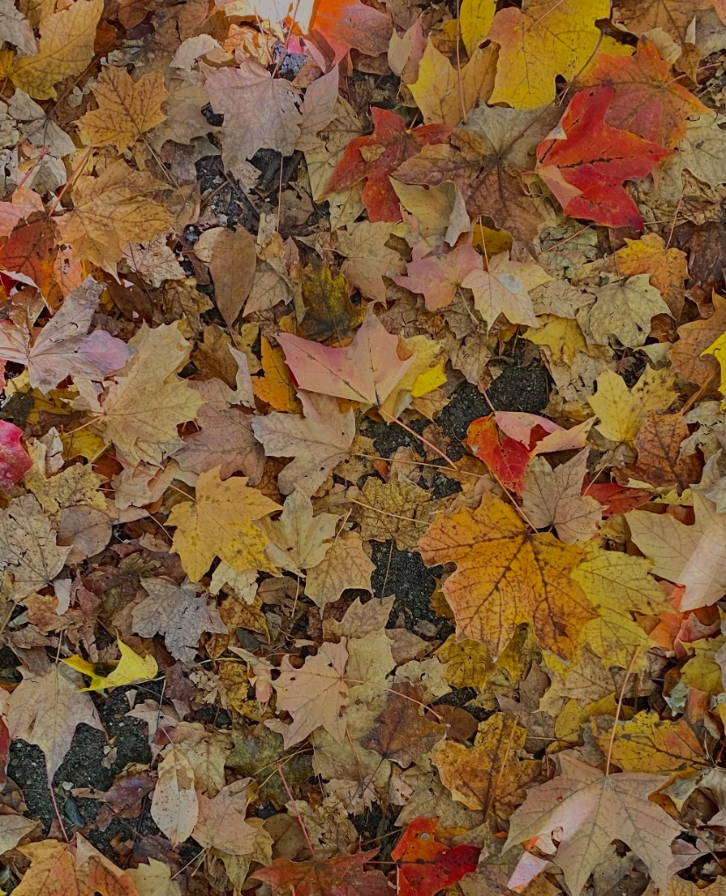
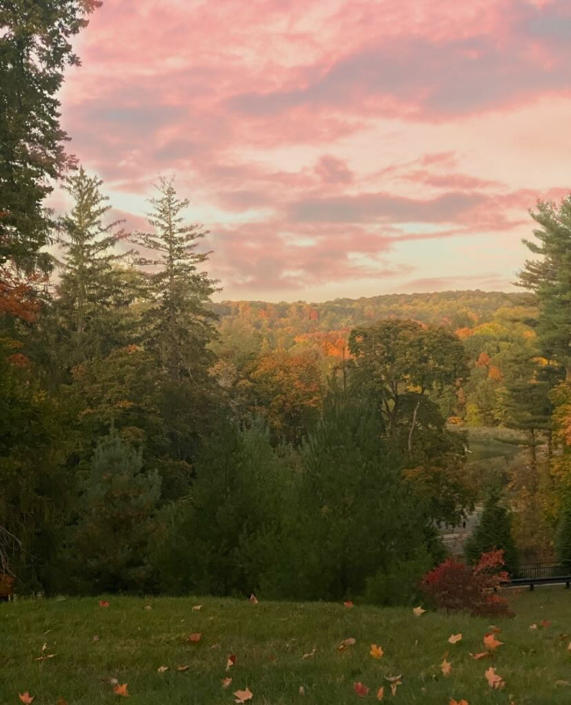

Op deze site delen we met jou de beste tips over de nieuwste series en films die je dit seizoen absoluut niet mag missen. Dompel jezelf onder in de meest betoverende verhalen en laat je meevoeren door het magische herfstseizoen. Daarnaast nemen we je mee naar de gezelligste koffietentjes waar je kunt genieten van heerlijke warme drankjes en smaakvolle lekkernijen. Of je nu op zoek bent naar de perfecte plek voor een date, gewoon wilt relaxen met je favoriete boek of intensief wilt studeren, wij hebben de beste spots voor jou geselecteerd. En laten we vooral niet vergeten hoe belangrijk het is om er stijlvol uit te zien tijdens de herfst! Op Hot Girl Herfst vind je volop inspiratie en trends voor de meest trendy outfits die passen bij dit seizoen. Van comfortabele truien en mooie laarzen tot aan modieuze accessoires, we hebben alle tips voor jou verzameld zodat jij stralend de herfst door kunt gaan. Maar een echte Hot Girl Herfst draait niet alleen om wat je buiten doet, maar ook om de warme en knusse sfeer die je in huis kunt creëren. Ontdek onze beste tips en tricks om jouw huis om te toveren tot een gezellig toevluchtsoord tijdens de koudere dagen. Van warme kleurenpaletten en sfeervolle verlichting tot aan herfstige decoraties, wij helpen je om jouw huis te laten bruisen van gezelligheid. Dus kom binnen, maak het jezelf comfortabel en laat je inspireren door alles wat Hot Girl Herfst te bieden heeft. Klaar om jouw herfstseizoen onvergetelijk te maken? Laten we samen genieten van warme drankjes, binge-worthy series, stijlvolle outfits en een knusse sfeer in huis. Welkom bij Hot Girl Herfst, waar het najaar tot leven komt!
 Hot Girl Herfst has arrived!
Ben jij ook zo dol op het najaar, waar de bladeren van kleur veranderen en de geur van warme drankjes en knusse avonden de lucht vullen? Of kijk je juist tegen de herfst op en ben je wanhopig opzoek naar een beetje positiviteit? Dan ben je hier aan het juiste adres! Hot Girl Herfst is dé plek waar je inspiratie en tips kunt vinden om optimaal van de herfst te genieten.